Introducción
El objetivo de este estudio es utilizar técnicas de Deep Learning para predecir el ingreso mediante imágenes satelitales, y conseguir, a diferencia de la Encuesta Permanente de Hogares (EPH) tener datos con mayor desagregación espacial y potencialmente con mayor continuidad temporal.
Para realizar estas predicciones primero se debe entrenar un modelo de redes neuronales convolucionales con técnicas de transfer-learning y fine-tuning utilizando una famosa arquitectura: EfficientNetV2-S. Para esto se necesita una base de datos que asocie cada imagen satelital a una etiqueta del ingreso per cápita familiar promedio de la zona que representa esa imagen.
En Argentina no existe ningún relevamiento oficial que consulte simultáneamente sobre ubicación con precisión radio censal e ingresos (de cualquier tipo), es por eso que esta base de datos debe construirse, y para lograr ello se utilizarán en conjunto la EPH, que releva ingresos, y el Censo 2022, que releva ubicación con precisión de radio censal.
Así este estudio se estructura en 2 grandes pasos: Construcción de una base de datos y el uso de un modelo de Deep Learning, tanto el entrenamiento como las predicciones del modelo. Se explicará cómo construir la base de datos siguiendo recomendaciones de la literatura y se desarrollará una explicación del uso de Deep Learning.
Se deja al cierre del estudio las conclusiones y discusión, donde se incluyen limitaciones y futuras mejoras. Este apartado es fundamental ya que se explica bajo que circunstancias existe validez estadística en el uso de estas técnicas modernas.
Marco Teórico
Este estudio toma de punto de partida la metodología utilizada en estudios previos quienes utilizan imágenes satelitales de alta calidad y técnicas de machine learning para crear mapas de ingreso con alta desagregación geográfica. Entrenan un modelo de redes neuronales convolucionales (CNN) para realizar predicciones del ingreso per cápita para el Área Metropolitana de Buenos Aires. Mejoran la resolución y frecuencia de la información censal basando la arquitectura del modelo en EfficientNetV2 y logran un R2 = 0,878, pasando la resolución espacial y superando el rendimiento de la literatura existente en ese momento.
Otros estudios utilizan imágenes satelitales de alta calidad para estimar gastos en consumo y riqueza en activos. Muestran como al utilizar datos de encuestas en conjunto con imágenes satelitales de 5 países africanos (Nigeria, Tanzania, Uganda, Malawi, Rwanda) un modelo de redes neuronales puede ser entrenado para explicar hasta el 75% de la variabilidad del producto económico local. Utilizan únicamente información pública. Además demuestran cuán poderosas pueden ser las técnicas de machine learning aplicadas a información limitada, sugiriendo gran potencial de mejoras en aplicaciones a distintas ciencias.
Dentro de este contexto este estudio busca utilizar técnicas de visión por computadora junto a imágenes satelitales para predecir el ingreso. La literatura muestra que con el uso de información pública los resultados pueden ser bastante buenos, teniendo una alta capacidad explicativa, sin embargo estos se hacen bajo técnicas que requieren una gran capacidad computacional, por lo que la calidad de los resultados está sujeta a esta capacidad.
Construcción de Base de Datos
Introducción a la metodología
No existe ninguna encuesta oficial en Argentina que releve simultáneamente ingresos y ubicación geográfica con alto nivel de desagregación. La EPH releva ingresos pero su nivel de desagregación es a nivel aglomerado urbano, mientras que el Censo releva ubicación geográfica con alta desagregación, pero no consulta sobre ningún tipo de ingresos.
Esta sección explica cómo obtener una base de datos que contenga una etiqueta de ingreso promedio para el mínimo nivel de desagregación geográfica según las particiones censales, es decir, nivel radio censal. Como referencia un radio censal es un área geográfica de tal tamaño que contiene aproximadamente 300 viviendas en áreas urbanas, por lo que sus tamaños pueden variar considerablemente de acuerdo con la densidad poblacional de la zona. Es la mínima unidad operativa de relevamiento territorial disponible públicamente.
En este estudio se utiliza el Censo 2022 y por su proximidad temporal la EPH del segundo trimestre 2022. Para construir esta base de datos se seguirá una metodología derivada de la literatura. Esta metodología consiste en encontrar variables correlacionadas con la variable ingreso que estén relevadas tanto en las encuestas de la EPH como en las encuestas del Censo. Ese será el grupo de variables con las que se trabajará. Luego se realizan estimaciones de los determinantes del ingreso con la base de datos que releva el ingreso, es decir, se estima el ingreso con el grupo de variables correlacionadas con el ingreso en la EPH. De esta forma se obtienen los parámetros estimados, que luego serán usados en los datos censales para predecir el ingreso per cápita familiar de cada persona dentro de cada radio censal.
Primero se estima un modelo de regresión lineal usando datos de la EPH, formalmente:
Donde y representa el ingreso per cápita familiar del individuo i, β es el vector de coeficientes y X es el vector de variables explicativas de interés de cada individuo. Luego se utiliza cada parámetro estimado para hacer una predicción del ingreso en cada individuo con los datos censales:
Donde la predicción del ingreso para cada individuo con los datos del censo se realiza a partir de los parámetros ya estimados con la EPH y el mismo set de variables usadas en EPH.
Una vez realizadas las predicciones para cada persona relevada en los radios censales de interés, se puede construir una variable de salida para cada radio censal que es el ingreso per cápita familiar promedio:
Donde j es cada radio censal, y se calcula el ingreso per cápita familiar promedio por radio censal con ponderación simple.
Construcción de Variables
Dentro del conjunto de variables posibles a utilizar, solo las siguientes fueron seleccionadas por su sentido económico para predecir el ingreso. Las variables que se presentan a continuación son relevadas por ambos operativos estadísticos, pero no están construidas de la misma forma, por lo que se tuvo que reconstruir las variables para que sean perfectamente comparables.
| Variables | Código EPH | Código Censo |
|---|---|---|
| Ingreso per cápita familiar | IPCF | --- |
| Material predominante de los pisos | IV3 | H10 |
| Material de la cubierta exterior del techo | V | H11_H12 |
| Presencia de cielorraso | IV5 | H11_H12 |
| Acceso a agua (dentro/fuera) | IV6 | H13 |
| Régimen de tenencia de la vivienda | II7 | H22 |
| Sexo registrado al nacer | CH04 | P02 |
| Edad | CH06 | EDAD |
| Nivel educativo más alto cursado | CH12 | MNI |
| Jefe de hogar | CH03 | P01 |
| Desagüe cloacas | IV11 | H18 |
| Miembros del hogar | IX_Tot | TOTPOBH |
Existe otro gran grupo de variables potencialmente importantes en las estimaciones del ingreso que fueron descartadas porque no mejoraban los resultados obtenidos. Algunos ejemplos son tipo de vivienda, cantidad de ambientes, procedencia del agua, presencia y ubicación del baño/letrina, combustible principal para cocinar, cobertura de salud, condición de actividad, entre otras.
Estimaciones con Modelo MCP
Para poder trabajar con los datos se define como región de interés el Aglomerado 29, es decir, la región Gran Tucumán - Tafí Viejo. Se estima un modelo de regresión lineal con mínimos cuadrados ponderados (MCP) con los datos de la EPH para obtener los coeficientes que servirán para las predicciones.
Luego de aplicar el factor de expansión muestral se tiene un total de 948.628 personas, pero para realizar las estimaciones de forma correcta se debe limpiar la base de datos debido a variables mal cargadas. Esto deja un total de 805.308 observaciones con las que se realizan las estimaciones utilizando el factor de expansión.
Antes de hacer las estimaciones mediante MCP se redefinen los valores extremos de la variable ingreso per cápita familiar para que tomen un valor igual al percentil 1 y al percentil 99. Además, esta variable se redefine como el logaritmo del ingreso. Los resultados de las estimaciones aparecen en la siguiente tabla:
| Variable | Coef. | Std. Err. | t | P > |t| | [0.025 | 0.975] |
|---|---|---|---|---|---|---|
| Constante | 9,5139 | 0,095 | 100,601 | 0,000 | 9,328 | 9,699 |
| Edad | -0,0051 | 0,003 | -1,772 | 0,076 | -0,011 | 0,001 |
| Edad² | 0,0001 | 0,000 | 4,111 | 0,000 | 0,000 | 0,000 |
| Miembros totales del hogar | -0,1568 | 0,022 | -7,162 | 0,000 | -0,200 | -0,114 |
| Miembros² | 0,0078 | 0,002 | 4,092 | 0,000 | 0,004 | 0,012 |
| Hombre | 0,1445 | 0,026 | 5,553 | 0,000 | 0,093 | 0,196 |
| Primario completo | 0,0744 | 0,052 | 1,424 | 0,155 | -0,028 | 0,177 |
| Secundario incompleto | 0,1263 | 0,041 | 3,094 | 0,002 | 0,046 | 0,206 |
| Secundario completo | 0,3407 | 0,049 | 6,890 | 0,000 | 0,244 | 0,438 |
| Superior incompleto | 0,4623 | 0,051 | 9,081 | 0,000 | 0,362 | 0,562 |
| Superior completo | 0,7272 | 0,060 | 12,048 | 0,000 | 0,609 | 0,846 |
| Jefe de hogar | 0,1597 | 0,035 | 4,587 | 0,000 | 0,091 | 0,228 |
| Piso calidad alta | 0,1633 | 0,036 | 4,533 | 0,000 | 0,093 | 0,234 |
| Acceso a agua potable | 0,2109 | 0,058 | 3,618 | 0,000 | 0,097 | 0,325 |
| Propietario de la vivienda | 0,1945 | 0,033 | 5,912 | 0,000 | 0,130 | 0,259 |
| Desagüe del baño | 0,2301 | 0,028 | 8,108 | 0,000 | 0,174 | 0,286 |
| Observaciones | 1.966 | Adj. R² | 0,350 | |||
Debido a que el modelo LASSO introduce un sesgo en las estimaciones y los resultados no son significativamente distintos a los obtenidos mediante MCP, se decide como modelo óptimo el de MCP.
Elección de Modelo Óptimo
Anteriormente se han mostrado los resultados de las estimaciones. Para elegir el mejor modelo se compara la distribución de ingresos utilizando únicamente datos de la EPH y las distribuciones con datos del Censo luego de realizar predicciones con ambos modelos.
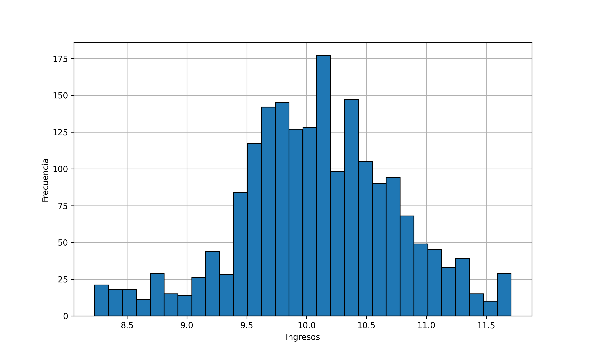
Figura 3.1 — Distribución del ingreso per cápita familiar en EPH
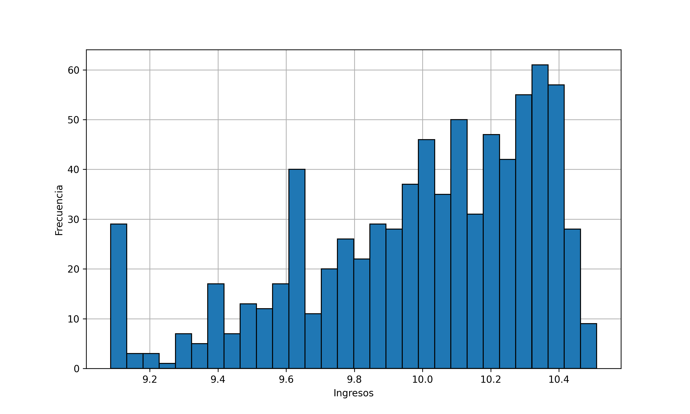
Figura 3.2 — Distribución de ingresos predichos con modelo MCP
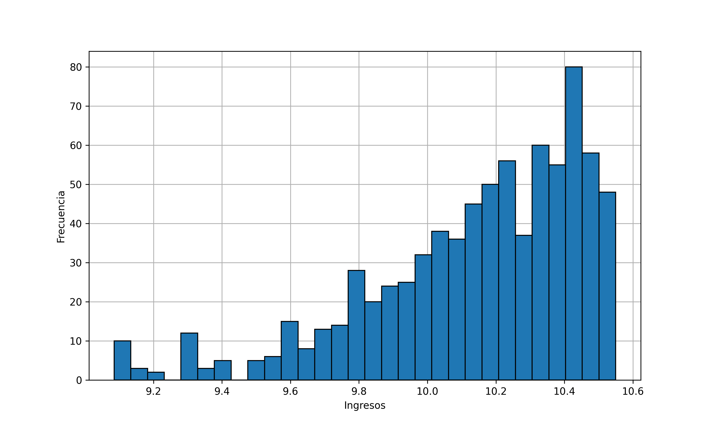
Figura 3.3 — Distribución de ingresos predichos con modelo LASSO
Elaboración de Mapas
Luego de haber predicho el ingreso per cápita familiar para cada persona dentro de cada radio censal utilizando los estimadores obtenidos, se calcula el ingreso promedio por radio censal. Ahora cada radio censal tiene asignado un ingreso, por lo que se puede observar la distribución espacial de estos ingresos.
El siguiente paso consiste en la elaboración de una grilla cuadriculada de 50x50 metros sobre todo el área de interés. Este paso se realiza porque la entrada de un modelo de redes neuronales convolucionales debe ser un conjunto de elementos de la misma dimensión.
Para poder asignar una etiqueta de ingreso a cada celda de la grilla se utiliza un promedio ponderado por la proporción de intersección espacial de cada radio sobre cada celda, formalmente:
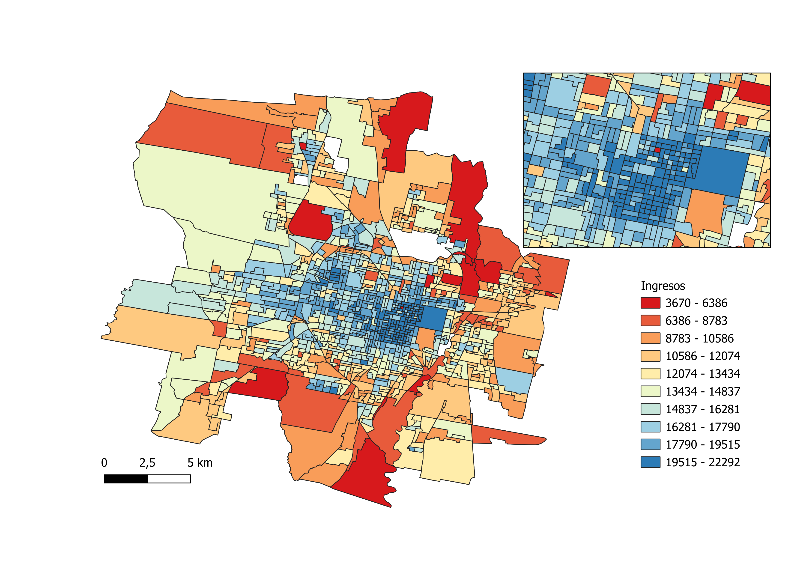
Figura 3.4 — Mapa de ingresos promedio por radio censal
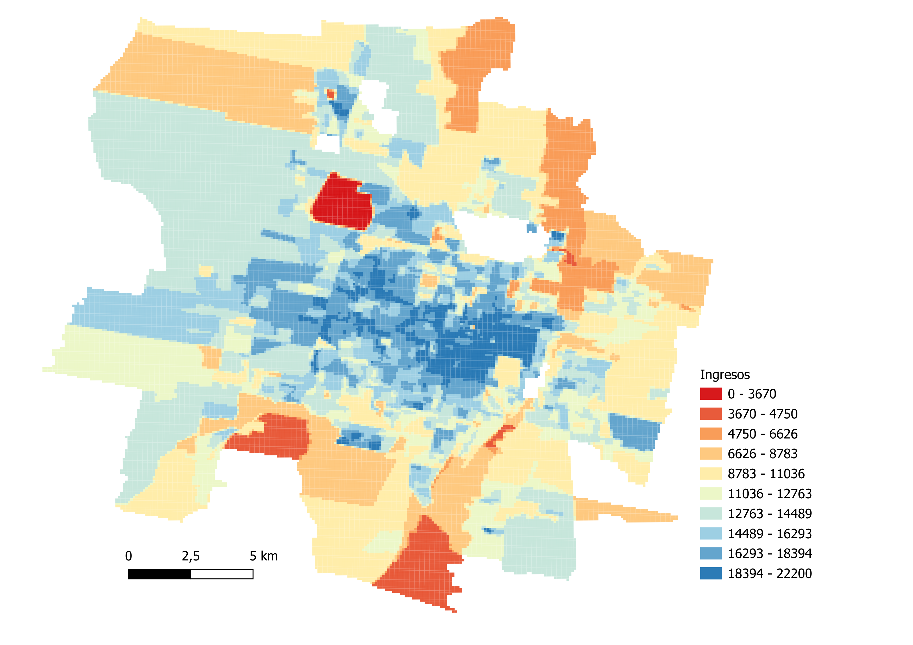
Figura 3.5 — Mapa de ingresos interpolados en grilla 50x50m
Las imágenes satelitales utilizadas son captadas mediante registros de radiación electromagnética reflejada por la superficie terrestre. Cada imagen satelital tiene una resolución de 188x188 píxeles, con 3 bandas RGB (rojo, verde y azul) dando una resolución de 0,27 metros por píxel. Las imágenes posteriormente son reescaladas computacionalmente a 224x224 píxeles.
Los colores del espectro visible se miden por su longitud de onda λ. Los rangos aproximados para los canales RGB son:
- Banda R (rojo): 450-510 nm
- Banda G (verde): 530-590 nm
- Banda B (azul): 640-670 nm
Entrenamiento del Modelo
Redes Neuronales
Este estudio está dentro de una línea de investigación que busca explotar fuentes de datos no tradicionales para la medición de variables, en este caso es el ingreso per cápita familiar. La elección de técnicas de Deep Learning se fundamenta en su capacidad para modelar relaciones altamente no lineales y capturar patrones complejos en datos de gran dimensionalidad.
Dentro de este conjunto de técnicas, las redes neuronales convolucionales (CNN) ocupan un lugar central. A través de múltiples capas jerárquicas las CNN pueden identificar desde características simples, como bordes o texturas, hasta patrones más complejos, como redes viales o vegetación, lo que las convierte en herramientas adecuadas para el análisis de imágenes satelitales.
La arquitectura base del modelo será la desarrollada por investigadores previos y mejorada posteriormente. La arquitectura es EfficientNetV2-S. Esta red, previamente entrenada en grandes bases de datos permite identificar patrones espaciales complejos en las 3 bandas del espectro visible, y sobre esta red se incorpora una red neuronal densa para que el modelo se ajuste a la tarea específica de la predicción del ingreso en Gran Tucumán - Tafí Viejo para el año 2022.
Debido a limitaciones computacionales, el área de estimación se reduce arbitrariamente a la gran mancha urbana de Gran Tucumán - Tafí Viejo. Esto permite reducir el total de imágenes de 180.760 a 80.633. Luego se dividen los datos por cercanía espacial en 3 grupos:
- 70% entrenamiento
- 15% validación
- 15% testeo
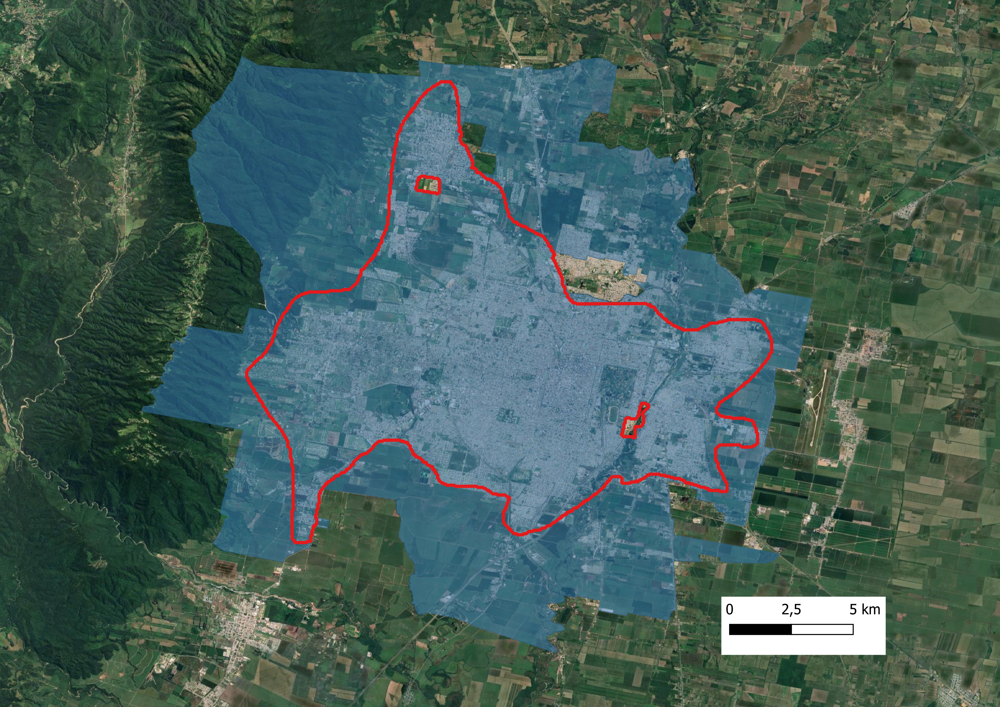
Figura 4.1 — Reducción del área de estudio a la mancha urbana
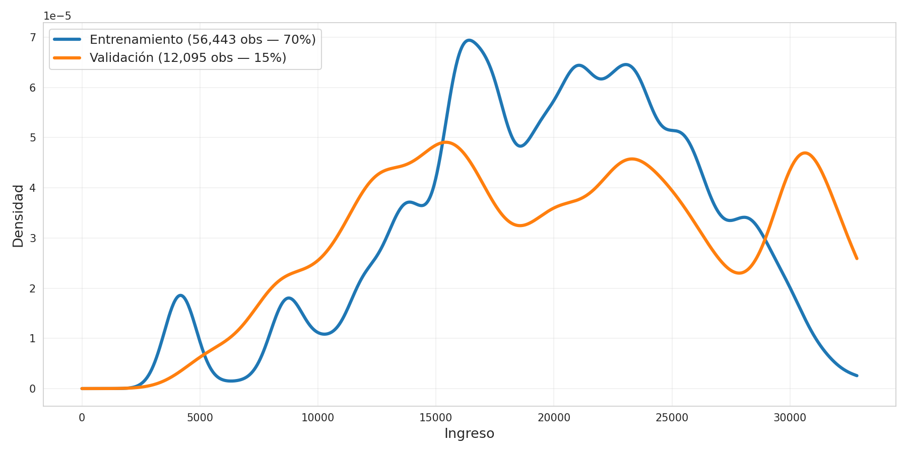
Figura 4.2 — Distribución de datos de entrenamiento y validación
| Capas (tipo) | Salida | Número de parámetros | Entrenable |
|---|---|---|---|
| input_layer_1 (InputLayer) | (None, 224, 224, 3) | 0 | — |
| multiply (Multiply) | (None, 224, 224, 3) | 0 | — |
| efficientnetv2-s (Functional) | (None, 1280) | 20.331.360 | Con fine-tuning |
| dense (Dense) | (None, 256) | 327.936 | Sí |
| batch_normalization | (None, 256) | 1.024 | Sí |
| dropout_1 (Dropout) | (None, 256) | 0 | — |
| dense_1 (Dense) | (None, 128) | 32.896 | Sí |
| batch_normalization_1 | (None, 128) | 512 | Sí |
| dropout_2 (Dropout) | (None, 128) | 0 | — |
| output (Dense) | (None, 1) | 129 | Sí |
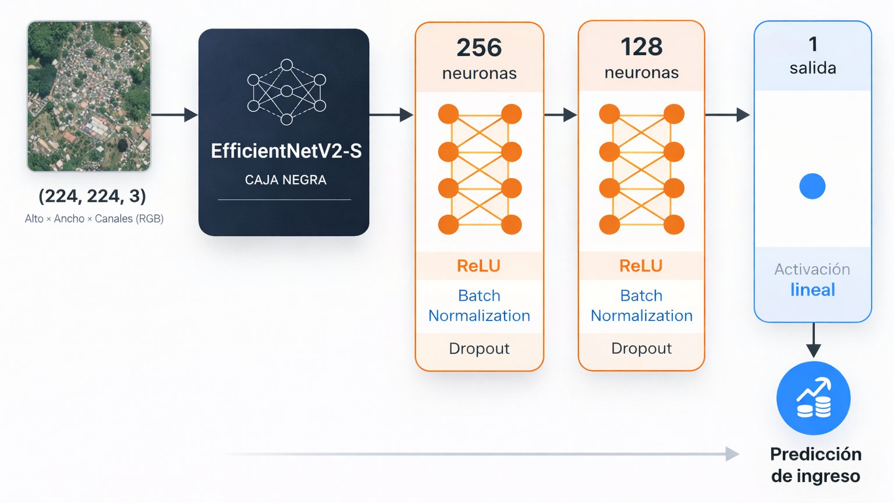
Figura 4.3 — Diagrama de estructura del modelo CNN
El modelo completo cuenta con un total de 20.693.857 parámetros, de los cuales 361.729 pueden ser entrenados. Los hiperparámetros del modelo fueron seleccionados siguiendo prácticas estándar:
EfficientNetV2-S
La arquitectura EfficientNet es propuesta buscando escalar redes neuronales convolucionales para mejorar precisión. Encuentran que se deben escalar simultáneamente las siguientes 3 dimensiones:
- Profundidad: Más capas
- Anchura: Más canales
- Resolución: Imágenes de mayor calidad
Se deben escalar todas las dimensiones juntas con un coeficiente compuesto φ que las balancea. El problema de la versión V1 es que al ser escalado de forma tan abrupta, desarrolló cuellos de botella que la versión EfficientNetV2 resuelve a través de:
- Fused-MBConv: Mejora el paralelismo del hardware moderno (GPUs y TPUs)
- Training-aware NAS: Optimiza simultaneamente precisión, velocidad de entrenamiento y tamaño de parámetros
- Progressive Learning: En los primeros epochs se usan imágenes pequeñas con poca regularización, que aumenta gradualmente
EfficientNet presenta distintas versiones: S, M y L. El modelo S es el punto de partida óptimo para la mayoría de escenarios porque ofrece un equilibrio entre eficiencia de recursos y buenos resultados.
Data-Augmentation
El uso de técnicas de data augmentation resulta fundamental en el entrenamiento de modelos de Deep Learning aplicados a imágenes, especialmente cuando la disponibilidad de datos es limitada, o cuando se busca mejorar la capacidad de generalización del modelo.
Particularmente en este trabajo se implementaron transformaciones aleatorias de rotaciones y variaciones en la iluminación. Estas modificaciones permiten simular diferentes orientaciones y condiciones, permitiendo que el modelo no dependa de patrones específicos de la fuente original, y así reduce el riesgo de sobreajuste.
Data augmentation no reemplaza ni amplía la base de datos original, lo que hace es que el modelo aplica transformaciones en tiempo real cada vez que ve una imagen, es decir que en cada epoch el modelo ve la misma imagen con una transformación aleatoria.
Resultados del Entrenamiento
Luego de entrenar el modelo en Google Colab con GPU A100 y RAM ampliada durante aproximadamente 8 horas se presentan los resultados. Durante el entrenamiento de 80 epochs el modelo con los mejores resultados fue el de la iteración 80.
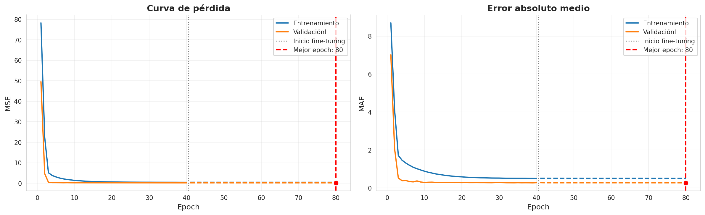
Figura 4.4 — Historial de entrenamiento MSE y MAE
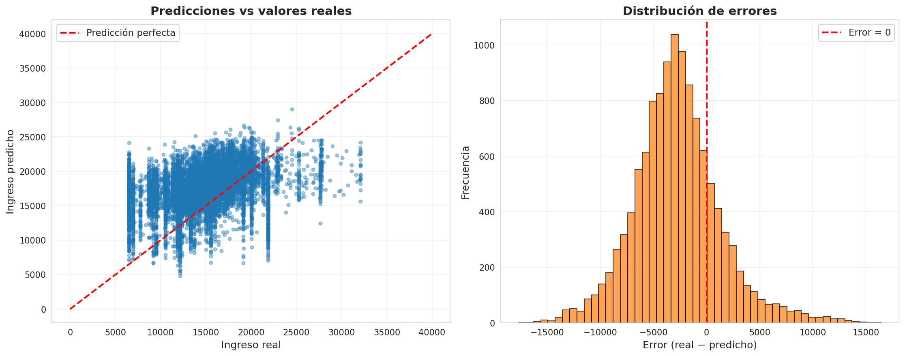
Figura 4.5 — Análisis de predicciones y distribución de errores
Se observa que la distribución de errores es aproximadamente normal con una asimetría hacia la izquierda, lo que indica que el modelo realiza predicciones de forma sesgada hacia los ingresos más bajos. El MAE total es de 3.987 pesos.
Discusión
Limitaciones
Las técnicas de Deep Learning tienen diferentes limitaciones, y entenderlas permite hacer un buen uso de estas técnicas modernas. La primera limitación que se menciona es sobre el gran costo computacional que tienen estos modelos de redes neuronales convolucionales.
La siguiente limitación que se menciona es propia de la aplicación económica de este trabajo y es sobre la construcción de la base de datos. La construcción de la base de datos se hace partiendo de técnicas para inferir sobre el ingreso de las personas teniendo referencia geográfica a nivel radio censal. Estas inferencias no parten de fuentes oficiales de relevamiento, por lo que los resultados están fuertemente influenciados por las decisiones iniciales del investigador.
Otra limitación tiene que ver con el uso de imágenes satelitales. Debido a limitaciones de acceso a estas imágenes, se utilizaron imágenes con fecha de 2025, y el Censo más cercano a esa fecha es el de 2022. Hay 3 años de diferencia entre las estimaciones.
Otra limitación es que se predice el ingreso mediante características observables, y además estas características son dependientes del ingreso constante y no del ingreso corriente, por lo que el modelo solo puede captar el ingreso promedio de largo plazo.
Se menciona también la limitada heterogeneidad visual presente en las imágenes satelitales para todo el área de Gran Tucumán - Tafí Viejo. Una reducida variabilidad en las características urbanas observables restringe la capacidad del modelo para identificar diferencias sistemáticas vinculadas al nivel de ingresos.
Mejoras Futuras
Este estudio es una primera aproximación al uso de Deep Learning para estimar el ingreso en la región de Gran Tucumán - Tafí Viejo por lo que tiene gran potencial de mejoras futuras.
Lo más sencillo tiene que ver con la capacidad computacional. Entrenar el modelo durante más epochs o hacer un modelo con una tasa de ajuste más fina (menor tasa de aprendizaje) puede lograr mejoras sin tener que cambiar nada metodológicamente. Además cambios en el hardware utilizado para el entrenamiento puede reducir el tiempo promedio de demora por epoch.
Una siguiente mejora tiene que ver con la disponibilidad de los datos de entrenamiento. Este modelo fue construido utilizando únicamente el aglomerado 29 de la EPH, y un subconjunto de imágenes que representan a esta región. El uso de mayor cantidad de imágenes y de mejor calidad puede resultar en grandes mejoras en las predicciones del modelo. Además las imágenes utilizadas pueden ser de varios tipos, aquí solo se utilizaron imágenes diurnas con baja nubosidad y solamente con 3 bandas (RGB).
Conclusiones
La poca disponibilidad de información estadística puede en muchas situaciones parecer un gran limitante para la investigación o evaluación de políticas, sobre todo cuando se trata de estadísticas oficiales sobre ingreso por su poca continuidad temporal y/o reducida desagregación espacial.
Este estudio plantea el uso de información alternativa, de libre disponibilidad, para resolver ese problema. Para ello se deben emplear modernas técnicas de Deep Learning que son fuertemente respaldadas por la evidencia empírica.
Este escrito es una primera aproximación al uso de CNN para estimar el ingreso en la región Gran Tucumán - Tafí Viejo para el año 2022 y los resultados evidencian el potencial de estas técnicas. La capacidad de predecir ingresos mediante imágenes satelitales con un nivel de desagregación mayor al radio censal es una herramienta muy poderosa que se puede extrapolar para predecir ingresos en otras regiones y en otros momentos del tiempo bajo determinadas limitaciones.
La extensión de aplicaciones que se origina a partir de este estudio son amplias, y pueden ser potencialmente muy beneficiosas en el avance de la economía aplicada. Particularmente se pueden realizar predicciones del ingreso para regiones no cubiertas por la EPH y también se puede mejorar la continuidad temporal de las estadísticas.
Anexos
Supuestos del Modelo de Regresión Lineal
Para la correcta estimación del modelo mediante Mínimos Cuadrados Ordinarios (MCO), se asumen los siguientes supuestos:
- Linealidad en los parámetros: el modelo es lineal en β.
- Exogeneidad estricta: $$E[\varepsilon_i | X_i] = 0$$
- Homocedasticidad: $$\text{Var}(\varepsilon_i | X_i) = \sigma^2$$
- No autocorrelación: $$\text{Cov}(\varepsilon_i, \varepsilon_j) = 0 \quad \forall i \neq j$$
- No multicolinealidad perfecta: la matriz de regresores tiene rango completo.
- Normalidad: $$\varepsilon_i \sim \mathcal{N}(0, \sigma^2)$$
Estimaciones con LASSO
Debido a que el objetivo de esta sección no es hacer inferencia estadística, sino realizar predicciones del ingreso individual, también se estimó un modelo LASSO. Este modelo agrega una penalidad que reduce la varianza del modelo. La función objetivo a minimizar en LASSO es la siguiente:
Para mejorar las predicciones del modelo se divide el conjunto de datos en 80% entrenamiento y 20% validación. El mejor modelo es aquel que minimice la función de pérdida en el conjunto de datos de validación.
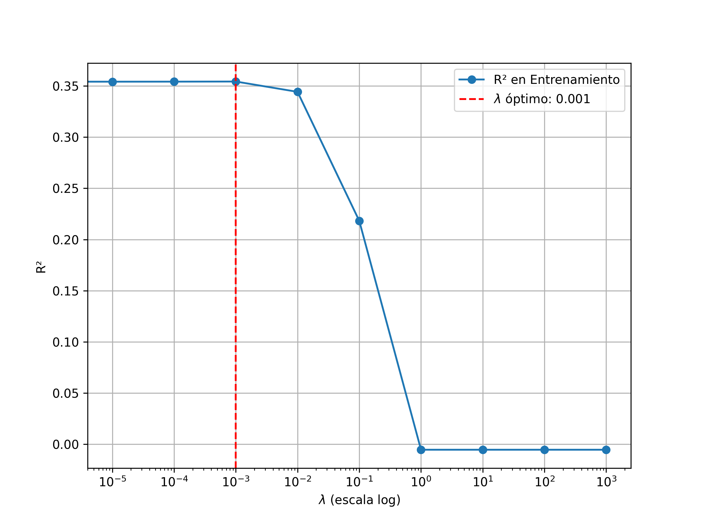
Figura A.1 — Búsqueda de λ óptimo para LASSO
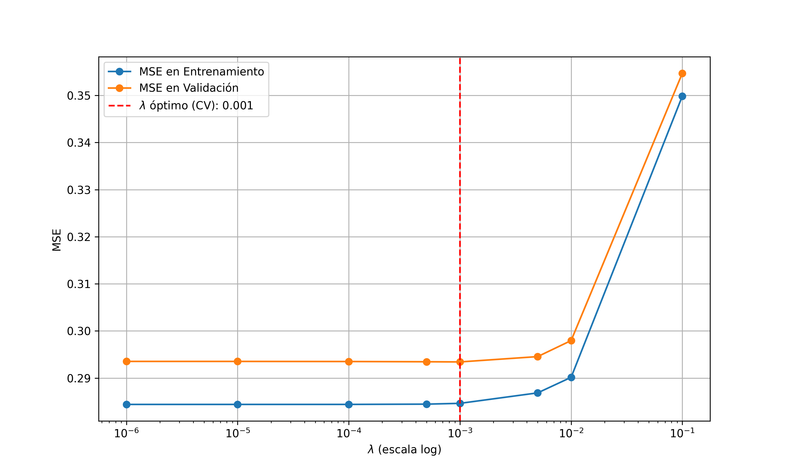
Figura A.2 — Optimización de LASSO minimizando error en validación
| Variable | Coeficiente |
|---|---|
| Edad | -0,001915 |
| Edad² | 0,000093 |
| Miembros totales del hogar | -0,142786 |
| Miembros² | 0,006713 |
| Hombre | 0,152176 |
| Primario completo | 0,045720 |
| Secundario incompleto | 0,113613 |
| Secundario completo | 0,286073 |
| Superior incompleto | 0,386690 |
| Superior completo | 0,654837 |
| Jefe de hogar | 0,158648 |
| Techo exterior (calidad alta) | 0,010295 |
| Techo interior (calidad media) | -0,221592 |
| Techo interior (calidad alta) | -0,072025 |
| Piso (calidad alta) | 0,163039 |
| Baño | 0,000000 |
| Acceso a agua potable | 0,205626 |
| Propietario de la vivienda | 0,175424 |
| Desagüe | 0,174130 |